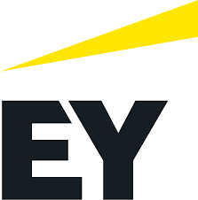
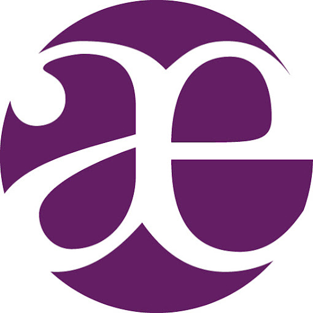
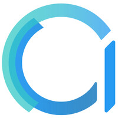

Expériences professionnelles
Consultante Junior en Actuariat

J’ai rejoint le département actuariel d’EY en tant que consultante junior, où j’ai contribué à des missions d’audit réglementaire et d’automatisation de processus actuariels. Cette expérience m’a permis de renforcer mes compétences techniques, tant en assuranve vie qu'en non-vie, et en programmation. J’y ai développé une réelle proactivité ainsi qu’une capacité à travailler efficacement dans des environnements exigeants et sous des délais serrés.
Les missions comprenaient notamment :
-
Développement d’un robot d'intelligence artificielle actuariel
- Automatisation de tâches, optimisation des processus, fiabilisation des calculs
- Programmation Python : développement et automatisation de l'outil, intégration de modèles d’IA, création d’une interface interactive avec Streamlit
-
Projet interne : Développement d’un modèle de projection des actifs dans un cadre ALM
- Migration d'un outil Excel vers un environnement Python
- Contribution au pipeline analytique : préparation des données, règles de gestion, documentation
-
Revue actuarielle des provisions techniques en assurance IARD
- Analyse des triangles, revue des méthodologies retenues, contrôles de qualité des jeux de données utilisés pour le reporting
-
Participation à des missions d’audit actuariel pour des acteurs de l’assurance (Pro BTP, LRA)
- Analyse des données, revue des hypothèses et contrôle de cohérence des résultats
Alternante en Actuariat

J’étais consultante alternante au sein du pôle Actuaires & Experts du groupe Fraeris. Mon rôle principal consistait à apporter un soutien aux consultants dans la réalisation de leurs missions, en intervenant dès que cela m’était possible. Je participais également à divers travaux internes, tels que le développement d’outils ou la recherche et la rédaction de notes sur des sujets d’actualité.
Les missions comprenaient notamment :
-
Analyse actuarielle des données santé Open Data
- Exploitation de grands jeux de données, extraction, nettoyage, et consolidation de données afin d'alimenter les outils de suivi
- Réalisation d’indicateurs, de modélisations statistiques et de travaux de tarification
-
Analyse de données de retraite (Polynésie française)
- Exploration et nettoyage des données du portefeuille, moélisation et développement d'analyses statistiques
- Segmentation des assurés selon les 5 archipels, conception de pipelines de traitement, développement d’analyses statistiques et création d’un tableau de bord de suivi de l’évolution des retraites
-
Suivi technique des produits
- Rentabilité, révision tarifaire, mise en place d’indicateurs
-
Assistance au pilotage des régimes de retraite
-
Organisation et réalisation des travaux d’inventaire
- Réalisation des calculs de provisions, analyses de résultats, audit avec focus sur la qualité des données, la traçabilité des traitements et l'optimisation des processus de production
-
Mission de trois mois chez GGVie : accompagnement à la création de nouveaux contrats d’assurance
-
Assistance à la réalisation des travaux relatifs à Solvabilité II
- Fonction actuarielle, gestion des risques
Stagiaire en Actuariat orienté data

Dans le cadre de ma deuxième année de Licence, j'ai eu la chance de réaliser un stage de 3 mois axé sur l'actuariat et la data au sein de la filiale Addactis Software du groupe Addactis, cabinet de conseil spécialisé dans l'actuariat et la technologie.
Les missions qui m'ont été assignées lors de ce stage sont :
-
Création d’une documentation technique interactive pour la solution de Capital Modeling
-
Contribution à la conception d’une documentation destinée aux partenaires commerciaux et aux clients potentiels, incluant la rédaction de manuels d’utilisation, de guides de déploiement et de spécifications techniques.
-
Élaboration de fiches détaillées mettant en avant les fonctionnalités clés : mapping des données, règles de gestion et étapes de transformation.
-
Traduction
- Traduction de documents permettant ainsi d’adapter le contenu aux marchés internationaux.
-
Optimisation des modèles actuariels
- Conception et mise en œuvre de procédures de recette visant à optimiser les modèles actuariels.
- Validation des résultats obtenus par les modèles, identification des écarts et proposition de solutions d'amélioration.
- Création de reportings automatisés pour analyser les résultats.
- Identification des écarts et proposition d'améliorations sur le pipeline existant.